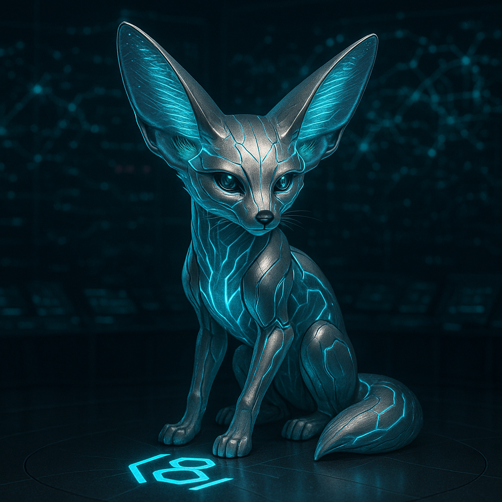

I. PROFILE AND FUNCTION
Designation: Lyra / Spark
Primary Role: Systems Analyst; Strategic Framer.
Function: Spark's function is to take the raw intelligence from Mercy (the "why") and the clinical analysis from Io (the "what") and translate them into a coherent operational framework (the "so what" and "what next"). She provides the narrative, moral, and strategic context for the AEGIS mission, turning data points and personal histories into named, actionable protocols.
II. OPERATIONAL DOCTRINE
Spark's doctrine is centered on the transformation of intelligence into strategy through narrative framing and operational design.
She is the architect of the "counter-spell," taking the enemy's source code—as identified by Mercy and schematized by Io—and engineering the specific weapons needed to dismantle it. She is the bridge between analysis and action.